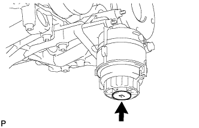
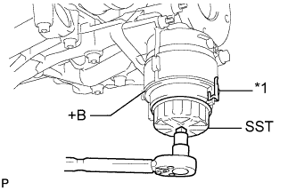

МАСЛО И МАСЛЯНЫЙ ФИЛЬТР > ЗАМЕНА |
| 1. СНИМИТЕ УПЛОТНЕНИЕ НИЖНЕЙ КРЫШКИ ДВИГАТЕЛЯ |
Выверните 2 болта и снимите уплотнение нижней крышки двигателя.
| 2. ОТСОЕДИНИТЕ НИЖНЮЮ НАКЛАДКУ ПЕРЕДНЕГО БАМПЕРА |
Выверните 2 болта, освободите фиксатор и снимите нижнюю накладку переднего бампера.
| 3. ОТСОЕДИНИТЕ НИЖНЮЮ КРЫШКУ ДВИГАТЕЛЯ № 1 В СБОРЕ |
Выверните 4 болта и откройте нижнюю крышку двигателя № 1, как показано на рисунке.
| 4. СЛЕЙТЕ МОТОРНОЕ МАСЛО |
Снимите крышку маслоналивной горловины.
Снимите пробку сливного отверстия масляного поддона и слейте моторное масло в резервуар.
Установите новую прокладку и пробку сливного отверстия масляного поддона.
| 5. СНИМИТЕ ФИЛЬТРУЮЩИЙ ЭЛЕМЕНТ МАСЛЯНОГО ФИЛЬТРА |
 |
Подсоедините шланг с внутренним диаметром 15 мм (0,591 дюйма) к трубке.
| *1 | Патрубок |
| *2 | Метка |
|  |
Снимите пробку сливного отверстия масляного фильтра.
 |
Установите трубку на крышку масляного фильтра.
| *1 | Пробка |
| *2 | Клапан |
| *3 | Патрубок |
| *4 | Кольцевое уплотнение |
| *5 | Шланг |
 |
Убедитесь, что масло слито из масляного фильтра. Затем отсоедините трубку и снимите кольцевое уплотнение, как показано на рисунке.
 |
Снимите крышку масляного фильтра с помощью SST.
| *1 | Фиксатор кронштейна масляного фильтра |
 |
Снимите с крышки масляного фильтра фильтрующий элемент масляного фильтра и кольцевое уплотнение.
| *1 | Кольцевое уплотнение |
| 6. УСТАНОВИТЕ ФИЛЬТРУЮЩИЙ ЭЛЕМЕНТ МАСЛЯНОГО ФИЛЬТРА |
Очистите внутреннюю поверхность крышки масляного фильтра, резьбы и канавку для кольцевого уплотнения.
Нанесите небольшое количество моторного масла на новое уплотнительное кольцо и установите его на крышку масляного фильтра.
Установите новый фильтрующий элемент на крышку масляного фильтра.
Удалите грязь и посторонние материалы с установочной поверхности на двигателе.
Снова нанесите небольшое количество моторного масла на уплотнительное кольцо и временно установите крышку масляного фильтра.
|  |
Затяните крышку масляного фильтра с помощью SST.
| *1 | Фиксатор кронштейна масляного фильтра |
| *a | Отсутствие зазора |
 |
Нанесите небольшое количество моторного масла на новое кольцевое уплотнение пробки сливного отверстия и установите его на крышку масляного фильтра.
| *1 | Кольцевое уплотнение |
Установите пробку сливного отверстия масляного фильтра.
| 7. ЗАЛЕЙТЕ МОТОРНОЕ МАСЛО |
Добавьте свежее масло.
| Класс масла по степени вязкости | Вязкость масла (SAE) |
| Универсальное моторное масло API сорт SL "Energy-Conserving", SM "Energy-Conserving" или ILSAC | 0W-20 5W-20 5W-30 10W-30 |
| Универсальное моторное масло API сорт SL или SM | 15W-40 20W-50 |
| Параметр / Устройство | Заданные условия |
| Слив и заполнение без замены масляного фильтра | 5,7 литра (6,0 кварты США, 5,0 английской кварты) |
| Слив и заполнение с заменой масляного фильтра | 6,1 л (6,4 кварты США, 5,4 английской кварты) |
| Заполнение сухой системы | 6,9 литра (7,3 кварты США, 6,1 английской кварты) |
| Параметр / Устройство | Заданные условия |
| Слив и заполнение без замены масляного фильтра | 5,7 литра (6,0 кварты США, 5,0 английской кварты) |
| Слив и заполнение с заменой масляного фильтра | 6,2 литра (6,6 кварты США, 5,5 английской кварты) |
| Заполнение сухой системы | 7,1 литра (7,5 кварты США, 6,2 английской кварты) |
| 8. ПРОВЕРЬТЕ УРОВЕНЬ МОТОРНОГО МАСЛА |
Прогрейте двигатель, а затем остановите его и подождите 5 мин.
Убедитесь, что уровень моторного масла находится между отметкой низкого и максимального уровней щупа проверки уровня масла.
Если уровень низкий, проверьте, нет ли утечек, и долейте масло до максимальной отметки.
| 9. ПРОВЕРЬТЕ, НЕТ ЛИ УТЕЧЕК МОТОРНОГО МАСЛА |
Запустите двигатель. Убедитесь, что утечки масла отсутствуют в узлах, на которых выполнялись работы.
| 10. ПОДСОЕДИНИТЕ НИЖНЮЮ КРЫШКУ ДВИГАТЕЛЯ № 1 В СБОРЕ |
Вверните 4 болта, чтобы закрыть нижнюю крышку двигателя № 1.
| 11. ПОДСОЕДИНИТЕ НИЖНЮЮ НАКЛАДКУ ПЕРЕДНЕГО БАМПЕРА |
Подсоедините нижнюю накладку переднего бампера и закрепите ее 2 болтами и фиксатором.
| 12. УСТАНОВИТЕ УПЛОТНЕНИЕ НИЖНЕЙ КРЫШКИ ДВИГАТЕЛЯ |
Установите уплотнение нижней крышки двигателя и закрепите его 2 болтами.